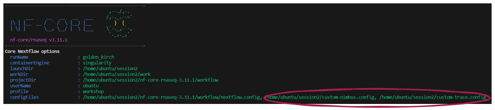
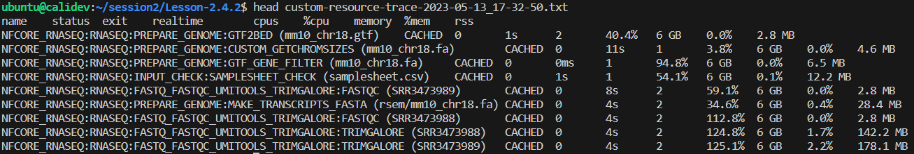
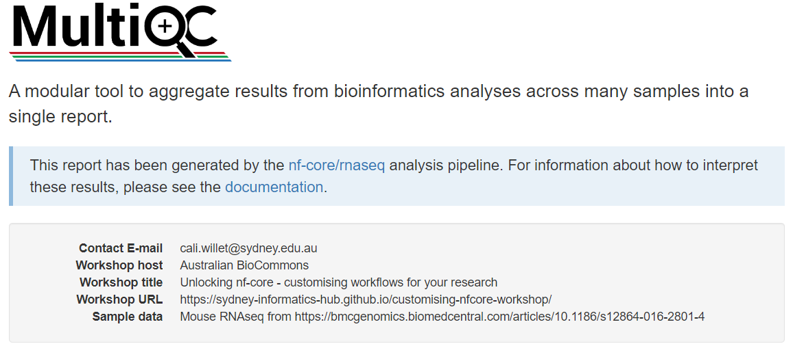
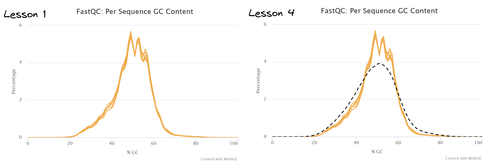
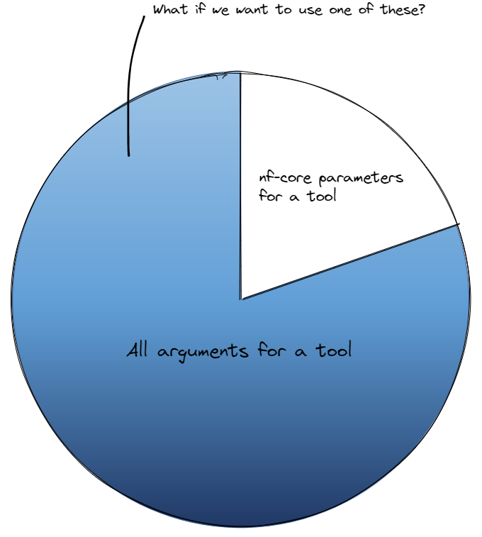
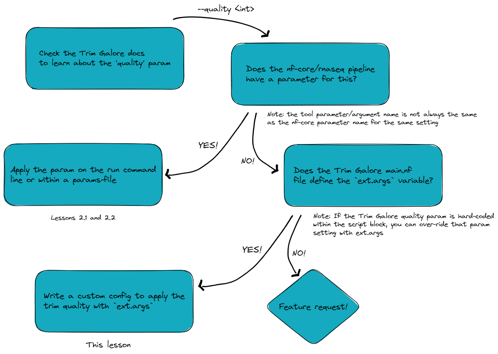
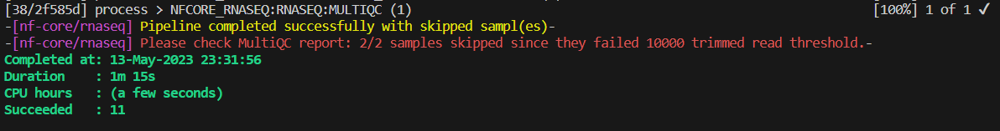
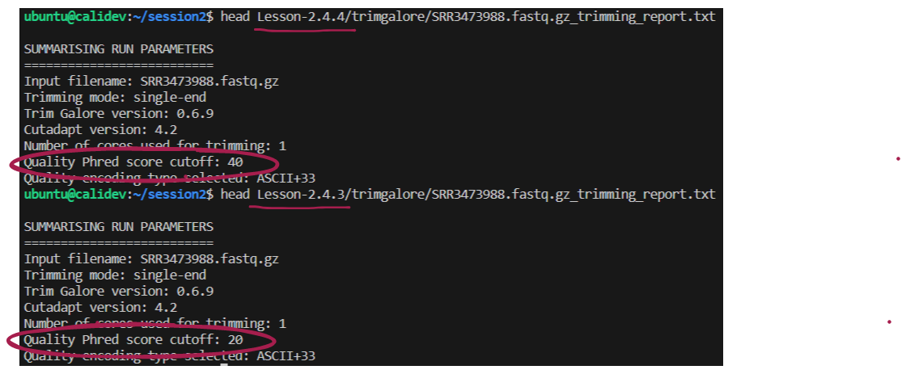

2.4. Using multiple configuration files at once
- Create and apply custom configuration files for:
- Customised resource tracing
- Bespoke MultiQC report formatting
- Over-riding the default container for a tool
- Adding tool arguments that are not available as nf-core parameters
- Apply multiple custom configuration files in a single workflow execution with
-c <conf-1,conf2,...>
Using multiple configuration files allows you to customise nf-core pipelines to your specific needs, with different configs to each alter the output in some specific way. They can be applied in a modular fashion, either added to or dropped from a pipeline execution as required.
This flexibility ensures that we preserve the portability and reproducibility of nf-core pipelines by not editing the core workflow code to make bespoke customisations.
In this lesson we will create four custom configuration files for different customisation scenarios, and apply them to the one run command.
Unlike our institutional config custom-nimbus.config, these configs are optional and portable:
- We can apply them only as needed
- We can apply them to nf-core runs on any machine
- We can apply them to any nf-core pipeline that uses the module the config operates on
2.4.1. Customised resource tracing
nf-core pipelines by default create a trace report file within <outdir>/pipeline_info. A trace report can be customised to include any combination of available fields using the Nextflow -f,-fields option.
If there is a specific combination of fields you would like to regularly capture for your pipeline runs, perhaps for resource benchmarking, it would be useful to have a custom configuration file that can be optionally applied to any run, to save having to extract this information later.
➤ View the available fields using the Nextflow log command, or online
nextflow log -list-fieldsNote that percent CPU and percent memory are %cpu% and %mem when used as arguments to the trace option, yet pcpu and pmem for the Nextflow log command.
➤ Use the Nextflow log command with fields option to extract some specific fields for a recent run. Choose any fields you like, and add them in a comma-separated , for example:
nextflow log | tail -1
nextflow log <run_name> -f name,status,exit,realtime,cpus,pcpu,memory,pmem,rssLet’s make a portable configuration file for resource tracing that we can share with collaborators and use across multiple pipelines 🤝
➤ Open a file for editing called custom-trace.config and add the following content. Feel free to list your own set of chosen trace fields rather than the example list below:
// Custom trace report config
// Define timestamp, to avoid overwriting existing trace
def trace_timestamp = new java.util.Date().format('yyyy-MM-dd_HH-mm-ss')
// Generate custom resource trace file
trace {
enabled = true
file = "${params.outdir}/custom-resource-trace-${trace_timestamp}.txt"
fields = 'name,status,exit,realtime,cpus,%cpu,memory,%mem,rss'
}➤ Before submitting your run, delete or comment out the withName: '.*:RNASEQ:ALIGN_STAR:STAR_ALIGN' block we applied in the custom-nimbus.config file
Use // for single line comments or /* .. */ to comment a block on multiple lines
➤ Save both configs and resume your previous run, adding our second custom config custom-trace.config at -c and setting outdir to Lesson-2.4.1:
When adding multiple custom configs, we supply them to -c in a comma-delimited list
nextflow run nf-core-rnaseq-3.11.1/workflow/main.nf \
-profile workshop \
-c custom-nimbus.config,custom-trace.config \
-params-file workshop-params.yaml \
--outdir Lesson-2.4.1 \
-resume 👀 Notice that your multiple custom configurations are listed under Core Nextflow options on the launch log printed to the screen:

➤ Once the workflow has run, take a look at the Lesson-2.4.1/custom-resource-trace-${trace_timestamp}.txt file:
👀 Notice that while the status is CACHED, the resources reported are from the actual compute required to execute the process, and not the time this execution took to restore the data from cache

2.4.2. Configure MultiQC reports
Many nf-core pipelines use MultiQC to aggregate results and statistics output by various bioinformatics tools, helping to summarise experiments containing multiple samples and multiple analysis steps.
MultiQC allows users the flexibility of customising the output reports. nf-core has enabled users to take full advantage of this functionality through the inclusion of the --multiqc_config parameter.
The --multiqc_config parameter is a ‘hidden param’! To see this parameter, you need to apply --show_hidden_params on the command line help, or select ‘Show hidden params’ on the nf-core parameters webpage
We are going to create a custom MultiQC config to:
- Overlay a theoretical GC content track specific for our mm10 reference genome
- Add a custom report header
➤ Open a file for editing named custom-multiqc-config.yaml and add the following content:
You can add any fields under the report_header_info section, as long as you follow the required formatting
# Project level information:
report_header_info:
- Contact E-mail: "cali.willet@sydney.edu.au"
- Workshop host: "Australian BioCommons"
- Workshop title: "Unlocking nf-core - customising workflows for your research"
- Workshop URL: https://sydney-informatics-hub.github.io/customising-nfcore-workshop/
- Sample data: Mouse RNAseq from https://bmcgenomics.biomedcentral.com/articles/10.1186/s12864-016-2801-4
# Theoretical GC Content:
fastqc_config:
fastqc_theoretical_gc: "mm10_txome" ➤ To the workshop-params.yaml file, add:
multiqc_config: "custom-multiqc-config.yaml" ➤ Make sure both YAML files are saved, then re-run the workflow, applying our customisations for both trace reporting and MultiQC formatting:
Can you construct the run command without viewing the solution below?
💡 Think about nf-core parameters versus Nextflow configuration files
We do not add custom-multiqc-config.yaml at the Nextflow option -c, because it is a YAML file not a Nextflow config. It is supplied as an argument to the optional nf-core parameter multiqc_config. We could specify --multiqc_config custom-multiqc-config.yaml on the command line, but we do not need to here because we have already added that parameter to workshop-params.yaml.
nextflow run nf-core-rnaseq-3.11.1/workflow/main.nf \
-profile workshop \
-c custom-nimbus.config,custom-trace.config \
-params-file workshop-params.yaml \
--outdir Lesson-2.4.2 \
-resume➤ View the html file Lesson-2.4.2/multiqc/star_salmon/multiqc_report.html and compare it to the report generated by a previous run:
- If you are using VS Code with the ‘Live Server’ extension installed, right click the html file in the Explorer pane and select ‘Open with Live Server’
- If you are using a terminal without a browser GUI enabled, use eg
scpcommand to take a copy to your local computer and open in your preferred browser
Notice your custom report header info at the top of the page:

Navigate to the section titled FastQC: Per Sequence GC Content. Compare the two plots to observe the custom track has been successfully added.

👀 This track has shown that our sample transcriptomes follow a normal distribution consistent with the mm10 reference.
If we did detect GC bias, how could we customise our run to correct for this?
🏋️ This is a tricky one, particularly if you are unfamiliar with RNAseq analysis!
💡 So here is a freebie to get you started: correcting for GC bias in this analysis requires operation at the transcript quantification step, which is performed by the SALMON_QUANT module
- Check the tool documentation for
salmon: we need to apply the--gcBiasflag - Check the available nf-core parameters for the rnaseq pipeline: we find that there is no nf-core parameter addressing GC bias!
- However, the astute observer would discover a parameter
--extra_salmon_quant_argswith description ‘Extra arguments to pass to Salmon quant command in addition to defaults defined by the pipeline’. Sounds perfect, yes?! - We can then provide the required
salmonflag (and any others we needed) as an argument to the nf-core--extra_salmon_quant_argsparameter, wrapped in quotes, supplying the parameter to the run as we would any other nf-core parameter (either on the command line or within a parameters file):
# Within parameters YAML file:
extra_salmon_quant_args : '--gcBias'
# On the command line - note the intentional inclusion of whitespace inside the quotes:
--extra_salmon_quant_args '--gcBias 'extra_<tool>_args is not available 😱
The extra_<tool>_args parameter is not available for every tool used in nf-core pipelines. We can supply external tool arguments using an alternate method that we will cover in lesson 2.4.4 😎
2.4.3. Configure your run to use a non-default container
Note that for deploying nf-core workflows, it is not recommended to replace the tools within the workflow, as this will decrease portability and reproducibilty! This exercise is to demonstrate how you can specify containers, as this may aid you in developing and testing your own Nextflow workflows or testing new tool versions
For this example, let’s assume we want to test out the latest version of Trim Galore, which is newer than the default version of Trim Galore used by version 3.11.1 of nf-core/rnaseq.
As can often be the case in programming, TIMTOWTDI!
Given what you have learnt about custom configuration files so far, take a moment to think about the optimal method to use for this customisation.
For maintaining portability and reproducibility, what is the best way to specify our custom Trim Galore container when we execute the nf-core/rnaseq pipeline?
a. Within the custom-nimbus.config institutional config file. It’s already working well on our platform, so we can build on it for further customisations without issue.
b. Within a separate custom config file named custom-trimgalore-version.config. We would then apply it at -c along with our institutional config whenever it was required.
c. Within the Trim Galore main.nf file. This way, we don’t need to worry about adding another custom config when we execute the run command.
In the event that we are testing a different tool version, this should not be placed within the institutional config that is shareable with others using nf-core pipelines on the same infrastructure. Doing so would prevent our institutional config from being portable to other analyses.
In general, editing the process main.nf file is not recommended, as this impedes reproducibility. Swapping out tool versions is a bespoke adaptation of the nf-core workflow that would harm reproducibility if it was inadvertently executed, which is likely to happen if it is hidden within the source code.
By placing it within a clearly named custom config file, there is less chance of unwittingly executing a workflow that does not match the expected utilisation of tools. Whenever we run an nf-core pipeline, the custom configs we applied are listed under Core Nextflow options in the run log, so there is a record that the particular configuration file was applied. Take care to save any custom configuration files applied to a run along with the project outputs, and to use an informative config name.
➤ Identify the default version of Trim Galore that has been used in our runs so far from the software_versions.yml file:
- Versions of all tools used in nf-core pipelines are reported in the default output file
<outdir>/pipeline_info/software_versions.yml - This information is also shown in the ‘nf-core/rnaseq Software Versions’ section of the MultiQC html report
- The module names are listed in alphabetical order, with the tools and versions used by the process listed below each module
more Lesson-2.4.2/pipeline_info/software_versions.ymlTRIMGALORE:
cutadapt: '3.4'
trimgalore: 0.6.7…and thus do not have a software_versions.yaml or MultiQC report to check, one way to discover the default tool version is to look in the process main.nf file:
grep container nf-core-rnaseq-3.11.1/workflow/modules/nf-core/trimgalore/main.nf container "${ workflow.containerEngine == 'singularity' && !task.ext.singularity_pull_docker_container ?
'quay.io/biocontainers/trim-galore:0.6.7--hdfd78af_0' }"This should not often be the case, as nf-core pipelines should first be run with a test dataset before executing your full run and delving into custom configuration.
nf-core pipelines ship with test datasets to enable easy testing on your infrastructure with eg nextflow run <workflow> -profile singularity,test
➤ Identify the container path for Trim Galore v. 0.6.10 hosted at CernVM-FS:
Pawsey have cached the Biocontainers tool repository at /cvmfs/singularity.galaxyproject.org. Tools are organised alphabetically into subdirectories, eg /cvmfs/singularity.galaxyproject.org/t/r/ for Trim Galore.
ls /cvmfs/singularity.galaxyproject.org/t/r/trim*/cvmfs/singularity.galaxyproject.org/t/r/trim-galore:0.6.10--hdfd78af_0➤ Next, identify the execution path for the TRIMGALORE module:
grep -i galore nf-core-rnaseq-3.11.1/workflow/conf/modules.config if (params.trimmer == 'trimgalore') {
withName: '.*:FASTQ_FASTQC_UMITOOLS_TRIMGALORE:FASTQC' {
if (params.trimmer == 'trimgalore') {
withName: '.*:FASTQ_FASTQC_UMITOOLS_TRIMGALORE:TRIMGALORE' {
params.extra_trimgalore_args ? params.extra_trimgalore_args.split("\\s(?=--)") : ''➤ Open a file for editing named custom-trimgalore-version.config, and start building your config with the process scope and withName selector that we covered in lesson 2.3.5:
// Config to test out newer trimgalore
process {
withName: {
}
}➤ Then copy the TRIMGALORE module execution path from your terminal inside the withName block:
Make sure to copy the module path for TRIMGALORE and not FASTQC which are both within the same SUBWORKFLOW
process {
withName: '.*:FASTQ_FASTQC_UMITOOLS_TRIMGALORE:TRIMGALORE' {
}
}➤ Finally, add the container details inside the withName block:
Other remote container sources can be used, such as quay.io, or point to a local image if your machine does not have internet access
process {
withName: '.*:FASTQ_FASTQC_UMITOOLS_TRIMGALORE:TRIMGALORE' {
container = '/cvmfs/singularity.galaxyproject.org/t/r/trim-galore:0.6.10--hdfd78af_0'
}
}➤ Save custom-trimgalore-version.config then resume the previous run, supplying our three configuration files at -c and specifying --outdir Lesson-2.4.3:
nextflow run nf-core-rnaseq-3.11.1/workflow/main.nf \
-profile workshop \
-c custom-nimbus.config,custom-trace.config,custom-trimgalore-version.config \
-params-file workshop-params.yaml \
--outdir Lesson-2.4.3 \
-resume Because we have altered a pre-processing step, read trimming and all downstream steps will need to be re-computed. Our run will take ~ 10 minutes to complete.
For now we will skip forward to the next lesson and check on the results of this lesson a little later.
Leave the run command running in your terminal, and open a new terminal (if you are in VS Code, do this by clicking the + icon in the top right corner of your terminal)
Run the nextflow log command with no arguments. Observe that this command is applicable to the working directory, not the session.
➤ After your run has completed, check that the updated version of Trim Galore has been used:
grep -i galore Lesson-2.4.3/pipeline_info/software_versions.ymlTRIMGALORE:
trimgalore: 0.6.10grep -i galore Lesson-2.4.2/pipeline_info/software_versions.yml TRIMGALORE:
trimgalore: 0.6.72.4.4. Apply external arguments
Mandatory minimum arguments that a tool needs to run are hard-coded within the main.nf file of the nf-core module.
Optional arguments for a tool that are commonly changed are usually included as nf-core workflow parameters, so they can be easily customised on the command line or supplied within a parameters file.
As we are all aware, bioinformatics tools can have a lot of optional arguments. It is not feasible for nf-core to paramaterise all of these arguments…

In this lesson, we will learn how to apply any argument for a tool that is not explicitly covered by an nf-core workflow parameter using Nextflow’s ext directive.
➤ Consider the diagram below:
- On the left of the diagram is an example of the standard
main.nfformat of a process namedexamplestored in themodulesdirectory- Above the script block, the
$argsvariable is defined - The
task.ext.args ?: ''expression checks if theext.argsparameter has already been defined - If it isn’t defined it will assign an empty string
- Inside the script block, the
$argsvariable is applied to the tool command
- Above the script block, the
- In the middle of the diagram is a custom configuration file targeting the ‘EXAMPLE’ process
- This configuration file gives the tool-specific argument
--flag1toext.argsusingwithName
- This configuration file gives the tool-specific argument
- On the right of the diagram we see how the tool command is executed if
-c example-custom.configwas applied to the run- The
$argsvariable is interpolated to--flag1whenmodules/example/main.nfis executed
- The

👀 You can observe the empty $args variable at play within .command.sh scripts for a run:
nextflow log
nextflow log <run_name> -f script⌛ Before we continue, time for a quick check back on the Lesson-2.4.3 run!
We will now pass an optional flag to the Trim Galore process using ext.args in a custom configuration file.
This workshop was developed before the release of nf-core/rnaseq revision 3.11.0, where the parameter --extra_trimgalore_args was first introduced.
We have retained this exercise as it is equally applicable to other tools which do not have an --extra_<tool>_args nf-core parameter.
This is a good reminder that:
- nf-core pipelines are under active development
- carefully check the parameter and usage docs with each new release
- submit feature requests to the nf-core/github pipeline repo to have
--extra_<tool>_argsadded where you think it’s warranted
For the sake of the lesson, let’s assume we want to apply a very stringent minimum Phred score of 40. This is overly stringent! Bear with us… 😊
➤ Follow the decision tree to work out how to apply this workflow customisation. Some useful links are below the flowchart:

🧰 nf-core/rnaseq trimming params v.3.11.1 vs v.3.10.1
Recall from lesson 2.1.2 that the inclusion of ext.args is currently standard practice for all DSL2 nf-core modules where additional parameters may be required to run a process, however this may not be implemented for all processes
From the above investigation, we have learnt that:
- The Trim Galore argument
--quality 40is required to over-ride the Trim Galore default of 20 - This parameter is absent from the
nf-core/rnaseqparameters list (for v.3.10.1 that is!) 😊 - Only
--cores,--gzipand input file are hard-coded intrimgalore/main.nf ext.argsis defined intrimgalore/main.nf
Write a custom configuration file named custom-trimgalore-args.config that adds --quality 40 to the script block of the TRIMGALORE module
🏋️ Try to write the config without showing the solution!
💡 Hint: you may find it helpful to take a copy of the custom-trimgalore-version.config file from the previous exercise
// A custom configuration file for specifying external tool arguments to Trim Galore
process {
withName: '.*:FASTQ_FASTQC_UMITOOLS_TRIMGALORE:TRIMGALORE' {
ext.args = '--quality 40'
}
}➤ Save custom-trimgalore-args.config then resume your run, adding our latest custom config file to the growing list at -c and set outdir param to Lesson-2.4.4:
nextflow run nf-core-rnaseq-3.11.1/workflow/main.nf \
-profile workshop \
-c custom-nimbus.config,custom-trace.config,custom-trimgalore-version.config,custom-trimgalore-args.config \
-params-file workshop-params.yaml \
--outdir Lesson-2.4.4 \
-resume😲 Pipeline completed successfully but 2/2 samples failed!

➤ Investigate the source of the failure:
Following the advice of the warning message, check the MultiQC report by opening the file
Lesson-2.4.4/multiqc/star_salmon/multiqc_report.html(with Live Server VS Code extension or taking a local copy)Click on the ‘WARNING: Fail Trimming Check’ on the navigation headings on the left
Both of our samples “failed the minimum trimmed reads threshold specified via the
--min_trimmed_readsparameter, and hence were ignored for the downstream processing steps”Looking at the
nf-core/rnaseqparameter documentation, we see--min_trimmed_readsparam with default value 10,000. Our samples both had < 5,000 readsComparing the outputs in
Lesson-2.4.4to a previous run, notice there is nostar_salmondirectory. These modules did not have their input channels fulfilled by the previous modules in the workflow, so they were not executed.
This lesson highlights the need to thoroughly check your output to ensure that the intended anlysis has been run and the results are what you require.
The message Pipeline completed successfully printed to your terminal every time a run completes (and also exit status of zero for individual tasks and cluster jobs) indicates that there were no errors running the pipeline, not that your run has produced the desired output!
In this example, it is clear that our ext.args customisation was successfully applied because of the catastrophic failure it produced. In less dramatic cases, how can we confirm that the external argument was actually applied? 🤔
➤ Confirm that the external argument was actually applied:
Within your MultiQC report, navigate to the section ‘nf-core/rnaseq Workflow Summary’. Unlike our custom options, profiles, and configs, the custom quality parameter is not documented!
Some tools write a handy log, in which case you might view the applied parameters from that file, eg:
head Lesson-2.4.4/trimgalore/SRR3473988.fastq.gz_trimming_report.txt 
In the absence of an informative tool log, you can always rely on nextflow log 🥰
nextflow log <run_name> -f script | grep -A 10 trim_galoretrim_galore \
--quality 40 \
--cores 1 \
--gzip \
SRR3473989.fastq.gz➤ Optional final run for the purists at heart 👼
If you would like to conclude today’s compute with a successful run, try changing the Trim Galore --quality threshold to 30.
- You can customise resource tracing, mutliqc report format and container use through custom configuration files
extis a very handy Nextflow directive that has been enabled by nf-core to provide full tool functionality for end users throughext.argsin custom configs- You can specify multiple custom configuration files at the Nextflow option
-cin a comma-delimited list - Appropriate custom config use provides modularity, portability and reproducibility to nf-core workflows
- There is no substitute for reading the tool docs when customising your runs! 📖